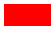

(PHP 4, PHP 5, PHP 7, PHP 8)
imagecolortransparent — 将颜色定义为透明
返回新（或当前，如果未指定）透明色的标识符。如果 color
为 null，并且图像没有透明色，则返回的标识符为 -1。
示例 #1 imagecolortransparent() 示例
<?php
// 创建 55x30 图像
$im = imagecreatetruecolor(55, 30);
$red = imagecolorallocate($im, 255, 0, 0);
$black = imagecolorallocate($im, 0, 0, 0);
// 使背景透明
imagecolortransparent($im, $black);
// 画红色矩形
imagefilledrectangle($im, 4, 4, 50, 25, $red);
// 保存图像
imagepng($im, './imagecolortransparent.png');
?>以上示例的输出类似于：

注意:
透明度仅能使用 imagecopymerge() 和真彩色图像复制，而不使用 imagecopy() 或调色板图像。
注意:
透明色是图像的属性，透明度不是颜色的属性。一旦设定某个颜色为透明色，图像中之前绘制为该颜色的任何区域都成为透明的。